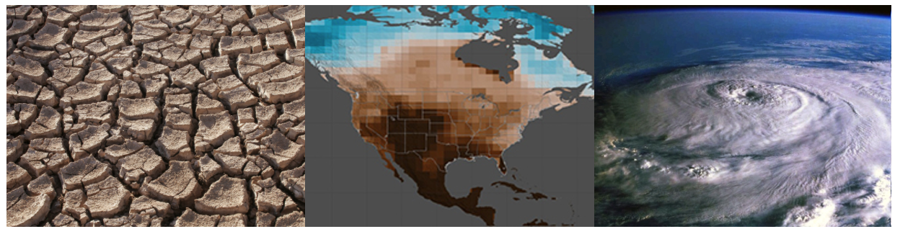

Extreme Weather

How can weather be related to climate change? Well, let's first turn to the storms that have been causing the most havoc recently (as of Oct. 2017): hurricanes (or, technically, "tropical cyclones"). Hurricanes originate from the sea: the warm, moist air rises, new air slides into the bottom, the new air is heated, it rises… and the cycle keeps going, all fed from the warm sea. Climate change, though, makes that sea warmer, and thus the hurricanes become (even more) intense.
What else? Heat, a huge effect of climate change. Because of increased heat, heat waves are getting more frequent. Some may be aware of the devastating heat wave in Europe that killed 70,000 people in 2003. In fact, that heat wave killed 506 people in Paris alone. This event should be so rare that it happens once in about 500 years; studies have found that that number has crashed down to 40.
Finally, climate change can make both droughts and floods more extreme. Climate change sucks moisture from the land and seas into the air; when there's no rain, this worsens droughts, and when there is rain (or snow), it worsens floods (such as the 2016 ones in Houston and Paris).